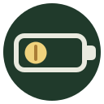
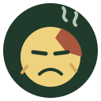

Token goblin
Possessive little gremlin. “My tokens.”
Standalone sketches · large view and 24 px check
Possessive little gremlin. “My tokens.”

The end-of-session panic, pared down to a status icon.

Usage climbed. The token has seen things.
A “big spender” proudly holding exactly one token.